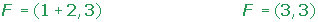

Parabola Problems
1Determine the equations of the following parabolas and indicate the values of their focal parameter, focus and directrix.
1 
2
2Determine the equations of the parabolas using the information given:
1 The directrix is x = −3 and the focus is (3, 0).
2 The directrix is y = 4 and the focus is (0, 0).
3 The directrix is y = −5 and the focus is (0, 5).
4 The directrix is x = 2 and the focus is (−2, 0).
5 The focus is (2, 0) and the vertex is (0, 0).
6 The focus is (3, 2) and the vertex is (5, 2).
7 The focus is (−2, 5) and the vertex is (−2, 2).
8 The focus is (3, 4) and the vertex is (1, 4).
3Calculate the vertex, focus and directrix of the following parabolas:
1 
2
3 
4Find the equation of the vertical parabola that passes through the points: A = (6, 1), B = (−2, 3) and C = (16, 6).
5Determine the equation of the parabola with a directrix of y = 0 and a focus at (2, 4).
6Determine the point(s) of intersection between the line r ≡ x + y − 5 = 0 and the parabola y2 = 16x.
7Find the equation of the horizontal parabola that passes through the point (3, 4) and has its vertex at (0, 0).
8Determine the equation of the parabola with an axis parallel to the y-axis, vertex on the x-axis and which passes through the points A = (2, 3) and B = (−1, 12).
9Determine the equation of the parabola with a directrix of x + y − 6 = 0 and a focus at (0, 0).
1
Determine the equations of the following parabolas and indicate the values of their focal parameter, focus and directrix.
1 

2

3 


2
Determine the equations of the parabolas using the information given:
1 The directrix is x = −3 and the focus is (3, 0).

2 The directrix is y = 4 and the focus is (0, 0).

3 The directrix is y = −5 and the focus is (0, 5).
4 The directrix is x = 2 and the focus is (−2, 0).

5 The focus is (2, 0) and the vertex is (0, 0).


6 The focus is (3, 2) and the vertex is (5, 2).

7 The focus is (−2, 5) and the vertex is (−2, 2).

8 The focus is (3, 4) and the vertex is (1, 4).


3
Calculate the vertex, focus and directrix of the following parabolas:
1 




2


3 


4
Find the equation of the vertical parabola that passes through the points: A = (6, 1), B = (−2, 3) and C = (16, 6).

5
Determine the equation of the parabola with a directrix of y = 0 and a focus at (2, 4).


6
Determine the point(s) of intersection between the line r ≡ x + y − 5 = 0 and the parabola y2 = 16x.

7
Find the equation of the horizontal parabola that passes through the point (3, 4) and has its vertex at (0, 0).
8
Determine the equation of the parabola with an axis parallel to the y-axis, vertex on the x-axis and which passes through the points A = (2, 3) and B = (−1, 12).
9
Determine the equation of the parabola with a directrix of x + y − 6 = 0 and a focus at (0, 0).